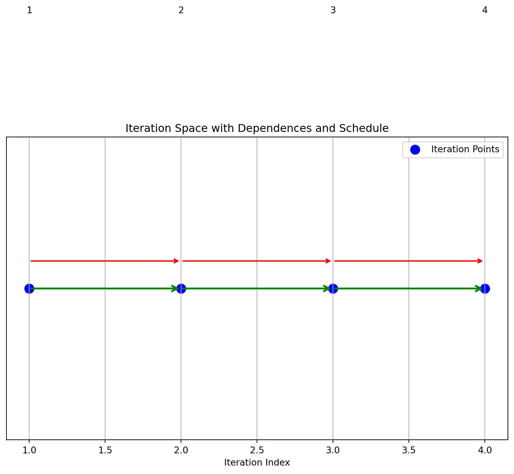
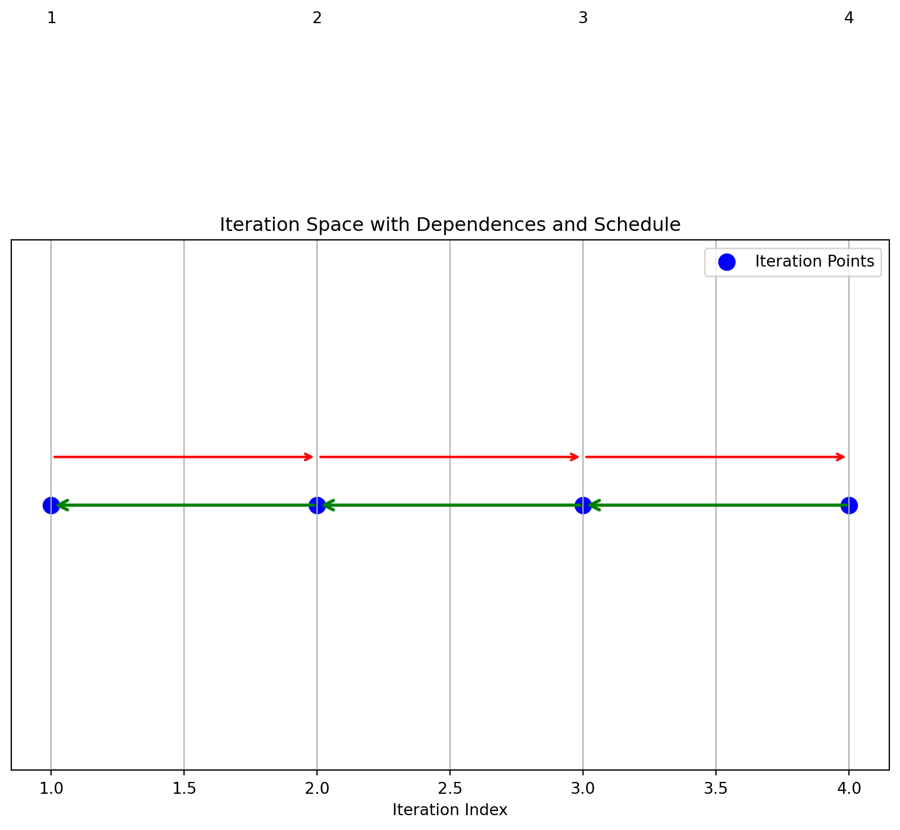
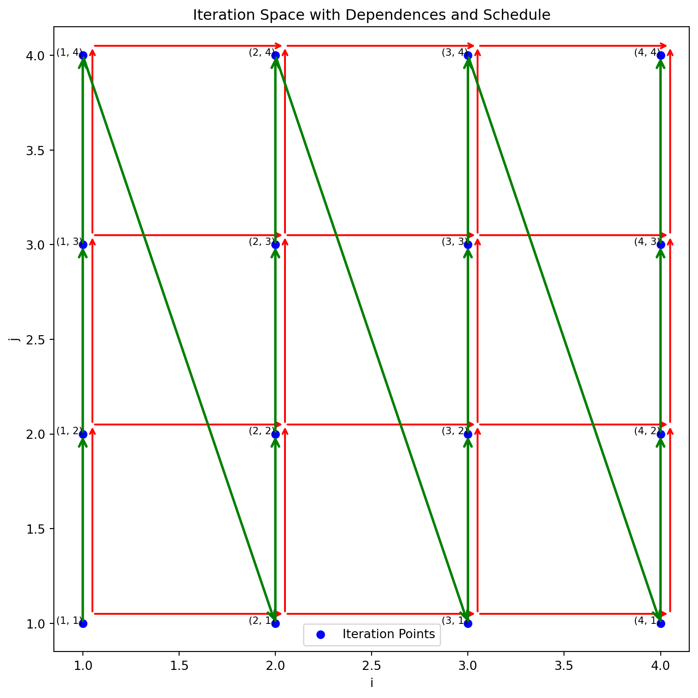
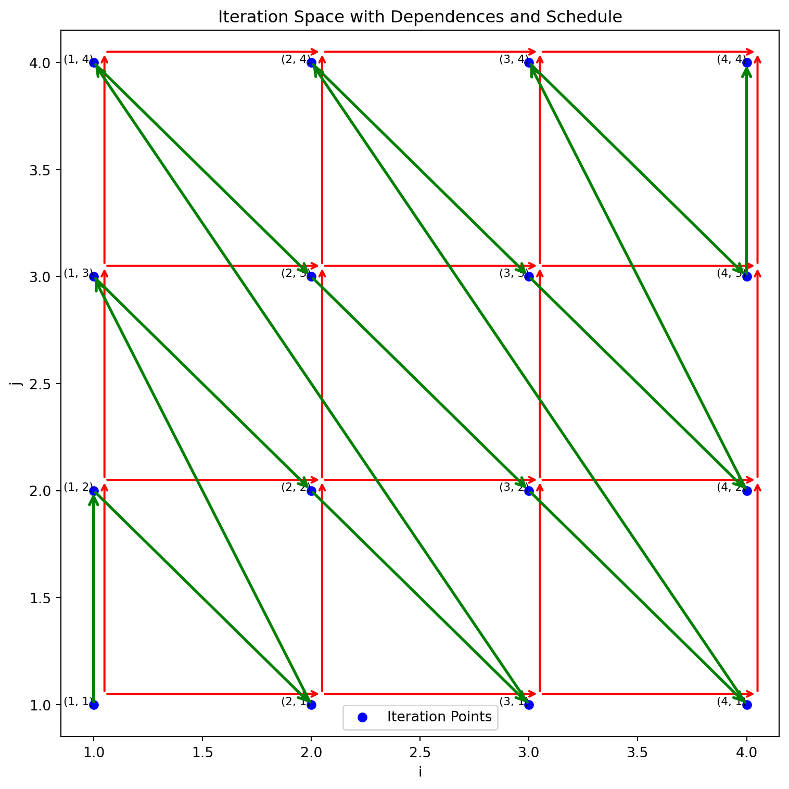
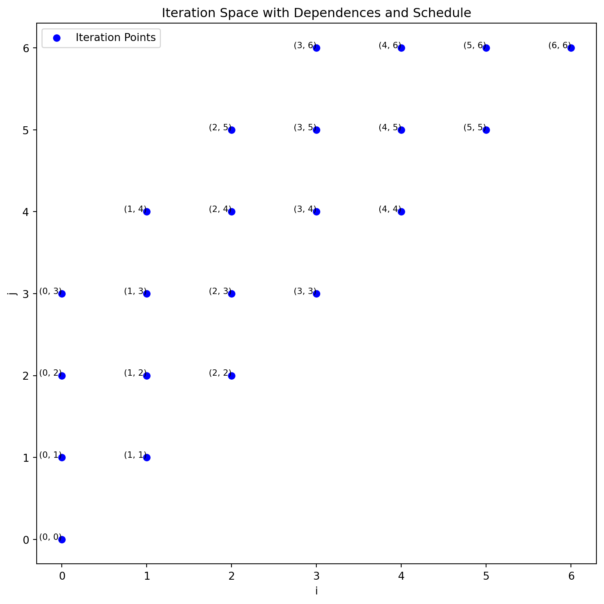
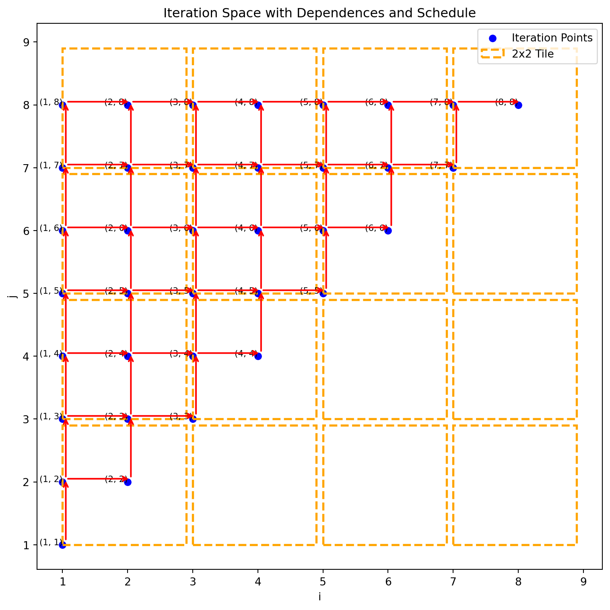

Code
Schedule: [1, 2, 3, 4]
Many modern programs in fields like High-Performance Computing (HPC), GPU programming, scientific applications and machine learning are loop-intensive.
Traditional compiler techniques encounter several challenges in these contexts:
Polyhedral methods address these challenges by providing a precise mathematical framework for analyzing and optimizing loop nests.
Transform the inner loops by introducing tile sizes \(T_i\) and \(T_j\):
Only applicable to loops with linear bounds and affine array accesses.
Example: Bounds and accesses must be simple linear expressions of loop indices.
Static Control Flow:
Methods require loops without complex control flow such as recursion or unpredictable branches (virtual functions).
Regions of code that can be handled in the polyhedral model are usually called Static Control Parts, abbreviated as SCoPs.
Usually, SCoPs may only contain regular control flow free of exceptions and other constructs that may provoke changes in control flow such as conditional expressions dependent on data (read from memory) or side effects of function calls.
loop free code can be a wrapped in for(i = 0; i < 1; i++){}
Given a transformation. - Does a transformation preserve the loop’s semantics? - What is the resulting loop structure after transformation?
Find the “best” transformation that optimizes a property such as parallelism or data locality.
Problem: Can we reverse this loop’s execution order?
for i = [1,2,3,4]
s: a[i] = a[i-1]Original schedule: i = 1, 2, 3, 4
Reversed schedule: i = 4, 3, 2, 1
Do these loops produce the same result?
for i = [1,2,3,4] for i = [4,3,2,1]
s: a[i] = a[i-1] s: a[i] = a[i-1] | Original Order | Reversed Order |
|---|---|
| Instance s(1): Reads a[0], Writes a[1] | Instance s(4): Reads a[3], Writes a[4] |
| Instance s(2): Reads a[1], Writes a[2] | Instance s(3): Reads a[2], Writes a[3] |
| Instance s(3): Reads a[2], Writes a[3] | Instance s(2): Reads a[1], Writes a[2] |
| Instance s(4): Reads a[3], Writes a[4] | Instance s(1): Reads a[0], Writes a[1] |
The data dependency arises from the use of \(𝑎[𝑖−1]\) which has to be computed before \(a[i]\)
This kind of data dependency is called read after write or raw dependency
we propose a transformation \(i \rightarrow 5 -i\) Does this transformation preserve all the dependencies?
a transformation is a change to the schedule
A schedule is a function:
\[s(\text{iteration}) = \text{execution order}(\text{time})\]
Example:
Original order: s(i) = i
Reversed order: s(i) = 5 - i
Producers must execute before consumers for the transformation to be valid.
not valid: if there is a pair \(i\),\(j\), \(s[i]\) produces a value, \(s[j]\) reads that value, and \(s[j]\) is first in the new schedule
How do we find such a pair?
Schedule: [4, 3, 2, 1]
a schedule is not valid if the arrows go in different directions
There are a number of tests for validity.
Mathematical Condition
Find \(i, j\) where: \[\text{s}(i) < \text{s}(j) : i \text{ executes first}\]
One: an integer linear programming solver (ILP) to find an integer solution to the equations.
NP-hard but efficient solvers exist for many of the small cases found in programs
Two: check for a cycle in the graph
for i in [1, 2, 3, 4]:
for j in [1, 2, 3, 4]:
a[i, j] = a[i, j-1] + a[i-1, j]Can this Loop Nest be Executed in Parallel?
data dependence is a mapping:
\(s(i) => s(i+1)\) from instance to instance
Each iteration (i, j) depends on (i, j-1) (the value to the left in the same row).
1. For example, a[1, 2] = a[1, 1] + a[0, 2], which means a[1, 2] depends on the value of a[1, 1] from the same row.
1. (1,1) -> (1,2)Each iteration (i, j) depends on (i-1, j) (the value from the previous row in the same column).
1. For example, a[2, 1] = a[1, 1] + a[2, 0], meaning a[2, 1] depends on a[1, 1] from the row above
1. (1,1) -> (2,1)A = B + C followed by D = A + EIn a serial execution, iterations proceed row by row, strictly respecting both horizontal and vertical dependencies. This schedule respects all dependencies but executes sequentially, limiting parallelism.
iteration_space = [(1,1),(1,2),(1,3),(1,4),
(2,1),(2,2),(2,3),(2,4),
(3,1),(3,2),(3,3),(3,4),
(4,1),(4,2),(4,3),(4,4)]
dependences = []
for i in range(1, 5):
for j in range(1, 5):
if j > 1: # Horizontal dependency
dependences.append(( (i, j-1),(i, j)))
if i > 1: # Vertical dependency
dependences.append(((i-1, j),(i, j) ))
schedule = [(i, j) for i in range(1, 5) for j in range(1, 5)]
draw_2d_iteration_space_with_dependence_graph(iteration_space, dependences, schedule)Schedule: [(1, 1), (1, 2), (1, 3), (1, 4), (2, 1), (2, 2), (2, 3), (2, 4), (3, 1), (3, 2), (3, 3), (3, 4), (4, 1), (4, 2), (4, 3), (4, 4)]
To maximize parallel execution in matrix computations, it’s crucial to identify and execute independent iterations simultaneously. One efficient strategy is Diagonal Parallelism:
i + j (sum of indices).i + j constant) can be executed in parallel since they are independent.# Organize the iteration space by diagonals
diagonals = {}
for (i, j) in iteration_space:
diag_key = i + j # Diagonal key: sum of indices
if diag_key not in diagonals:
diagonals[diag_key] = []
diagonals[diag_key].append((i, j))
# Sort the diagonals by diagonal key
sorted_diagonals = sorted(diagonals.keys())
# Print the diagonal schedule
print("Diagonal Schedule:")
print(diagonals)Diagonal Schedule:
{2: [(1, 1)], 3: [(1, 2), (2, 1)], 4: [(1, 3), (2, 2), (3, 1)], 5: [(1, 4), (2, 3), (3, 2), (4, 1)], 6: [(2, 4), (3, 3), (4, 2)], 7: [(3, 4), (4, 3)], 8: [(4, 4)]}Schedule: [(1, 1), (1, 2), (2, 1), (1, 3), (2, 2), (3, 1), (1, 4), (2, 3), (3, 2), (4, 1), (2, 4), (3, 3), (4, 2), (3, 4), (4, 3), (4, 4)]
each diagonal line can run in parallel
An affine function \(f(\vec{v})\) is defined as:
\[f(\vec{v}) = M_f \vec{v} + \vec{f}_0\]
where:
\(\vec{v}\) is a \(d\)-dimensional vector of loop indices:
\[\vec{v} = \begin{pmatrix} v_1 \\ \vdots \\ v_d \end{pmatrix}\]
\(M_f\) is an integer matrix with \(k\) rows and \(d\) columns:
\[M_f \in \mathbb{Z}^{k \times d}\]
\(\vec{f}_0\) is a \(k\)-dimensional integer translation vector:
\[\vec{f}_0 \in \mathbb{Z}^k\]
Note: All components are integers \(\mathbb{Z}\).
An affine function is a linear transformation followed by a translation. For example, each loop iteration \(\vec{v}\) (e.g., \((i, j)\) in a 2D nested loop) can map iteration indices to dependence locations.
Perfect Loop Nest:
for (int i = 0; i < N; i++) {
for (int j = 0; j < N; j++) {
a[i][j] = i + j;
}
} for (int i = 0; i < N; i++) {
b[i] = 0;
for (int j = 0; j < N; j++) {
a[i][j] += i * j;
}
}if we look at the domain or index set of an affine loop nest we have a convex polyhedron
The iteration vector \(\vec{i}_S\) for a statement \(S\) is a vector of loop indices from outermost to innermost. It represents a dynamic instance of \(S\) in a loop nest.
The domain (or index set) of a statement \(S\) is the set of all its iteration vectors.
for (i=0 ; i<N ; i++)
for (j=0 ; j<N ; j++)
s1: a(i, j) = a(i - 1, j) + 1;
just the domain
\[ \begin{aligned} i & \geq 0 \\ j & \geq 0 \\ -i+N-1 & \geq 0 \\ -j+N-1 & \geq 0 \end{aligned} \quad \quad \mathcal{D}^{S_{1}}:\left(\begin{array}{cccc} 1 & 0 & 0 & 0 \\ 0 & 1 & 0 & 0 \\ -1 & 0 & 1 & -1 \\ 0 & -1 & 1 & -1 \end{array}\right)\left(\begin{array}{c} i \\ j \\ N \\ 1 \end{array}\right) \geq 0 \]
We use a matrix and a vector to store a domain
we have (\(i_\text{src}\), \(j_\text{src}\)), (\(i_\text{dest}\), \(j_\text{dest})\)
both pairs are in the iteration space and \(i_{\text{dest}} = i_{\text{src}} + 1, \quad j_{\text{dest}} = j_{\text{src}}\).
\[ \quad \quad \left(\begin{array}{cccc} 1 & 0 & 0 & 0 & 0 &0 \\ 0 & 1 & 0 & 0 & 0 & 0 \\ -1 & 0 &0&0& 1 & -1 \\ 0 & -1 &0& 0& 1 & -1 \\ 0 & 0 & 1 & 0 & 0 & 0 \\ 0 & 0 & 0 & 1 & 0 & 0 \\ -0 & 0 &-1&0& 1 & -1 \\ 0 & 0 &0& -1 & 1 & -1 \\ -1 & 0 & 1 &0 &0 &0 \\ 0 & -1 & 0 & 1 &0 &1 \end{array}\right)\left(\begin{array}{c} i_\text{src} \\ j_\text{src} \\ i_\text{dest}\\ j_\text{dest}\\ 1\\ N \end{array}\right) \geq 0 \]
for (i = 0; i < N; i++)
for (j = 0; j < N; j++)
S1: A[i, j] = A[i, j] + u1[i] * v1[j] + u2[i] * v2[j];
for (k = 0; k < N; k++)
for (l = 0; l < N; l++)
S2: x[k] = x[k] + beta * A[l, k] * y[l];A[i, j] potentially overlaps with A[l, k].when
(0 i < N)
(0 j < N)
(0 k < N)
(0 l < N)
Dependence Conditions:
S1 depends on the loop in S2.Challenge: Determine the new loop bounds after interchange.

original
for (i = 0, i < 9; i++)
for (j = i; j < 7 && j < i+4; j++)
a[i,j] = 3
reordered
for (j = 0; j <=6; j++)
for (i = max(j-3,0); i <= j; i++)
a[i,j] = 3how do we get the reordered bounds?
Purpose: Project a polyhedron onto a lower-dimensional space by eliminating variables from systems of linear inequalities.
Variable Elimination: Simplifies a system of linear inequalities by removing variables, reducing the dimensionality of the polyhedron while maintaining its feasibility.
Effective for systems in higher dimensions.
for (i = 0, i < 9; i++)
for (j = i; j < 7 && j < i+4; j++)
a[i,j] = 3in the new version j will be the outer loop, so cannot use i in the bounds
i and Determine Bounds for jBounds for \(j\): \(0 \le j \le 6\)
iFourier-Motzkin elimination is computationally expensive, especially when the number of variables is large.
Worst-case complexity: The number of inequalities generated can grow exponentially with the number of variables, resulting in inefficient performance for high-dimensional systems. - Despite this, it is still a useful tool for small to medium-dimensional systems where the elimination process can be computationally feasible.
99% of hpc loops are affine: C. Bastoul, A. Cohen, S. Girbal, S. Sharma, and O. Temam. Putting polyhedral loop transformations to work. In LCPC, 2003.
over 95% of loops in deep learning are affine:
Norman P Jouppi, Cliff Young, Nishant Patil, David Patterson, Gaurav Agrawal, RaminderBajwa, Sarah Bates, Suresh Bhatia, Nan Boden, Al Borchers, et al. 2017. In-datacenter performance analysis of a tensor processing unit. In 2017 ACM/IEEE 44th Annual International Symposium on Computer Architecture (ISCA). IEEE, 1–12.
ilp is np-complete so it is slow, but often tractable for problems with up to several hundred variables.
Some compiler writers feel that means poly methods can only do this for toy programs? - Is the complexity a barrier for real-world compiler applications?
// Consider the following nested loops with data dependency in matrix A:
for (i = 1; i <= n; i++) {
for (j = i; j <= n; j++) {
// S: Data dependency on A[i-1][j] and A[i][j-1]
A[i][j] = (A[i-1][j] + A[i][j-1]) * 0.5;
}
}The computation of \(A[i][j]\) depends on \(A[i-1][j]\) and \(A[i][j-1]\), creating a pattern of data dependencies.
Data Dependence for A[i][j] = (A[i-1][j] + A[i][j-1]) * 0.5
[((1, 1), (1, 2)), ((1, 2), (1, 3)), ((1, 3), (1, 4)), ((1, 4), (1, 5)), ((1, 5), (1, 6)), ((1, 6), (1, 7)), ((1, 7), (1, 8)), ((1, 2), (2, 2)), ((2, 1), (2, 2)), ((1, 3), (2, 3)), ((2, 2), (2, 3)), ((1, 4), (2, 4)), ((2, 3), (2, 4)), ((1, 5), (2, 5)), ((2, 4), (2, 5)), ((1, 6), (2, 6)), ((2, 5), (2, 6)), ((1, 7), (2, 7)), ((2, 6), (2, 7)), ((1, 8), (2, 8)), ((2, 7), (2, 8)), ((2, 3), (3, 3)), ((3, 2), (3, 3)), ((2, 4), (3, 4)), ((3, 3), (3, 4)), ((2, 5), (3, 5)), ((3, 4), (3, 5)), ((2, 6), (3, 6)), ((3, 5), (3, 6)), ((2, 7), (3, 7)), ((3, 6), (3, 7)), ((2, 8), (3, 8)), ((3, 7), (3, 8)), ((3, 4), (4, 4)), ((4, 3), (4, 4)), ((3, 5), (4, 5)), ((4, 4), (4, 5)), ((3, 6), (4, 6)), ((4, 5), (4, 6)), ((3, 7), (4, 7)), ((4, 6), (4, 7)), ((3, 8), (4, 8)), ((4, 7), (4, 8)), ((4, 5), (5, 5)), ((5, 4), (5, 5)), ((4, 6), (5, 6)), ((5, 5), (5, 6)), ((4, 7), (5, 7)), ((5, 6), (5, 7)), ((4, 8), (5, 8)), ((5, 7), (5, 8)), ((5, 6), (6, 6)), ((6, 5), (6, 6)), ((5, 7), (6, 7)), ((6, 6), (6, 7)), ((5, 8), (6, 8)), ((6, 7), (6, 8)), ((6, 7), (7, 7)), ((7, 6), (7, 7)), ((6, 8), (7, 8)), ((7, 7), (7, 8)), ((7, 8), (8, 8)), ((8, 7), (8, 8))]
The schedule traverses the matrix in an upward direction for each column (j), moving left to right across columns (i).
adding tiles does not have a problem when dependence, but with-in each tile have to execute serially
\[(i,j) \gg (m,n) \iff i > m \lor (i = m \land j > n)\]
for i in [1,2,3,4] for j in [1,2,3]
for j in [1,2,3] for i in [1,2,3,4]
s: a(i,j) = a(i-1,j+1) a(i,j) = a(i-1,j+1)
data flow
read write
s(1,1) a(0,2) a(1,1)
s(1,2) a(0,3) a(1,2)
s(1,3) a(0,4) a(1,3)
s(1,4) a(0,5) a(1,4)
s(2,1) a(1,2) a(2,1) s(1,2)-> s(2,1)
s(2,2) a(1,3) a(2,2) s(1,3)-> s(2.2)\[ s(i,j) \rightarrow s(i+1, j-1) \]
Does there exist a statement s(i,j) and a statement \(s(i',j')\) where in the new schedule \(s(i',j')\) executes first and data flows backward in time \[ \begin{align*} (i', j') \gg (j,i) &\text{ $i',j'$ is first} \\ i' = 1+ i &\text{ data\ from \ i+1 to $i'$}\\ j' = -1 +j &\text{ data\ from \ j-1 to $j'$}\\ 1 \le i \le 4 \\ 1 \le j \le 3 \\ 1 \le i' \le 4 \\ 1 \le j' \leftrightarrows 3 \end{align*} \]
because of the lexicographic order we have two ilp problems one where \(i'\) is greater then j, and one where \(i'\) = j
I ran it through:
https://online-optimizer.appspot.com
which gave me a solution:
s(4,2) reads s(3,3) but s(4,2) executes first
transformation: [i] ==> [-i]
for (int c0 = 0; c0 < n; c0 += 1)
S(c0);
for (int c0 = -n + 1; c0 <= 0; c0 += 1)
S(-c0);transformation: [0, i] -> [i,0]; [1, i] -> [i, 1]
{
for (int c1 = 0; c1 <= n; c1 += 1)
S(c1);
for (int c1 = 0; c1 <= n; c1 += 1)
T(c1);
}
for (int c0 = 0; c0 <= n; c0 += 1) {
S(c0);
T(c0);
}transformation: [i, 0] -> [0, i]; [i, 1] -> [1, i]
for (int c0 = 0; c0 <= n; c0 += 1) {
S(c0);
T(c0);
}
{
for (int c1 = 0; c1 <= n; c1 += 1)
S(c1);
for (int c1 = 0; c1 <= n; c1 += 1)
T(c1);
}transformation: [i] -> [floor(i/4), i % 4]
for (int c0 = 0; c0 <= 1023; c0 += 1)
S(c0);
for (int c0 = 0; c0 <= 255; c0 += 1)
for (int c1 = 0; c1 <= 3; c1 += 1)
S(4 * c0 + c1);transformation: [i,j] -> [floor(i/4), i % 4, floor(j/4), j % 4]
for (int c0 = 0; c0 <= 1023; c0 += 1)
for (int c1 = 0; c1 <= 1023; c1 += 1)
S(c0, c1);
for (int c0 = 0; c0 <= 255; c0 += 1)
for (int c1 = 0; c1 <= 3; c1 += 1)
for (int c2 = 0; c2 <= 255; c2 += 1)
for (int c3 = 0; c3 <= 3; c3 += 1)
S(4 * c0 + c1, 4 * c2 + c3);
for i in [0, 1, 2, 3, 4, 5]:
P: a(i) = input(i) + 1
for j in [0, 1, 2, 3, 4, 5]:
c: b(j) = a(j) + 2what transformation will give the best locality?
Each loop can be represented by its iteration space in a polyhedral form.
Loop 1: \(𝑖 \in [0,1,2,3,5]\)
Loop 2: \(j \in [0,1,2,3,4,5]\)
The dependencies between the two loops are: \(p(i)\) must be computed before \(c(i)\)
We introduce a schedule for each loop using affine transformations. (we can only handle affine transformations )
For the first loop: \[\theta_1(i) = \alpha_1 i + \beta_1\]
For the second loop: \[\theta_2(j) = \alpha_2 j + \beta_2\]
The goal is to reorder the iterations such that all dependencies are respected and memory locality is improved.
We have to find four scalars
For all \(i, j\) such that \(p(i)\) sends data to \(c(j)\), the following constraint holds:
\[\text{if } p(i) \to c(j), \quad \text{then } \theta_1(i) \leq \theta_2(j).\]
For all \(0 \leq i \leq 5\) and \(0 \leq j \leq 5\), and \(i=j\) the following condition holds: \[\theta_1(i) \leq theta_2(j)\]
expanding this out
\[\alpha_1 i + \beta_1 \leq \alpha_2 j + \beta_2\]
looks bad- non-linear constraint since there is a product, and the foralls do not work with solvers
We apply a theorem called the affine form of the Farkas lemma which turns this into a tractable problem
An affine form is non-negative over a polyhedron if and only if it can be be written as a non-negative combination of the constraints that form the polyhedron
forall \(0 \le i \le 5\) and \(0 \le j \le 5\) and \(i = j\)
such that \(-\alpha_1 * i + \alpha_2 * j + (\beta_1 - \beta_2) \ge 0\) affine form
polyhedron
find a function that gives the locality
minimize w: \(w \ge \alpha_2 * i + \beta_2 - \alpha_1 * j - \beta_1\)
w is a bound in time between producer and consumer, how long the location needs to stay in the local memory
we minimized the time between definition and use, for best locality, if we maximize that time we get the most parallel code
Since everything is affine it is hard to formulate a complex cost function